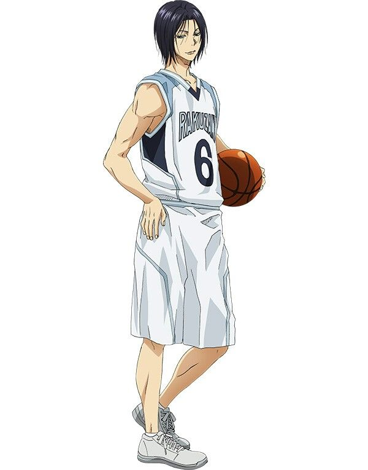
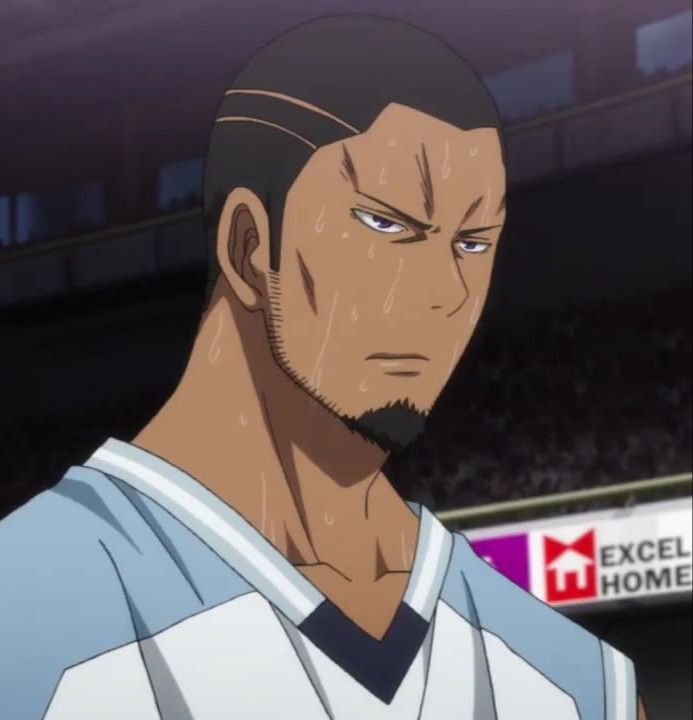
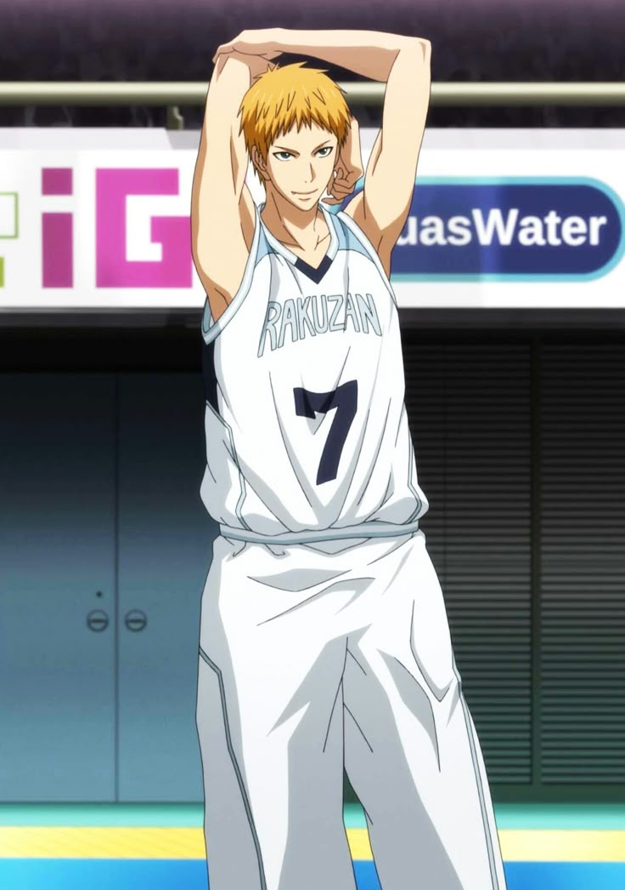
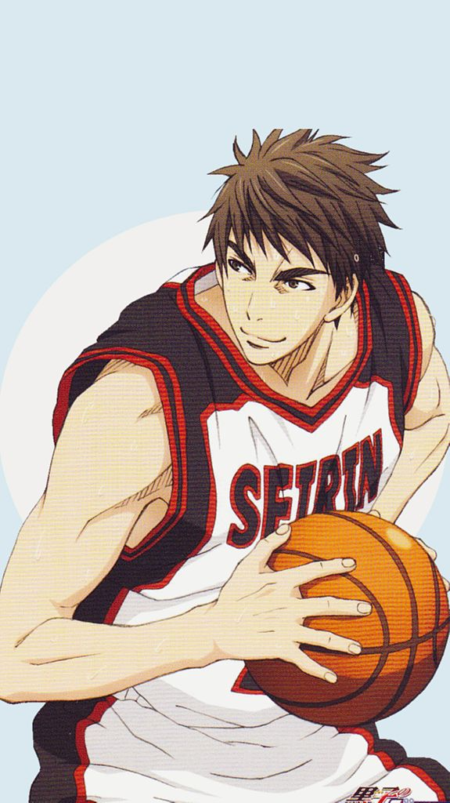
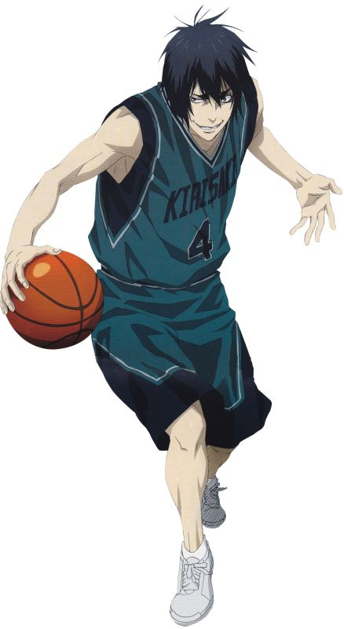

Kuroko no Basket // Player Dossier
In another Era, they would have been known as Prodigies. They were hidden in the shadow of the best.
↓ Scroll to meet the kings

// Rakuzan High · #7
"He shoots three types of shots, and you cannot block all three."
A polished, elegant shooting guard with three unstoppable shooting forms: Heaven (untouchable loft), Earth (low-trajectory skip), and Zero (perfectly vertical release). Combined with Rakuzan's elite system, he is the most technically complete shooter among the Uncrowned Kings.

// Rakuzan High · #5
"You play basketball with your body. And what moves your body are your muscles. As long you have muscles, everything improves!!!"
An overwhelmingly physical center who dominates through sheer muscle and body mass. What Nebuya lacks in finesse he more than compensates with raw power, his rebounding and post presence make him virtually unmovable under the basket. The most physically dominant of the Uncrowned Kings.

// Rakuzan High · #6
"Five fingers, five dribbles and you can't stop any of them."
A wildly instinctive small forward whose five-finger lightning dribble creates unpredictable drives that even Miracles struggle to predict. Pure aggression and explosive athleticism. Hayama plays on pure animal instinct with minimal tactical calculation.

// Seirin High · #7
"I'll sacrifice myself any day, to protect everyone. That's why I came back!"
A physically dominant centre whose deceptive gentleness masks iron-willed tenacity on the boards. Warm, self-sacrificing, and quietly ferocious. He founded Seirin's basketball club and returned from knee surgery to carry it to the top.

// Kirisaki Daiichi High · #4
"I don't care if they're geniuses or prodigies. Break them and they're all just trash."
A calculating, sadistic point guard who weaponises intellect over athleticism. His genius lies not in scoring but in dismantling opponents; reading passing lanes before they form, picking off the ball with surgical precision, and breaking the will of anyone who steps on the court against him